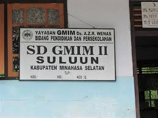
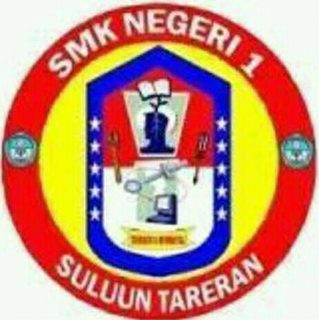
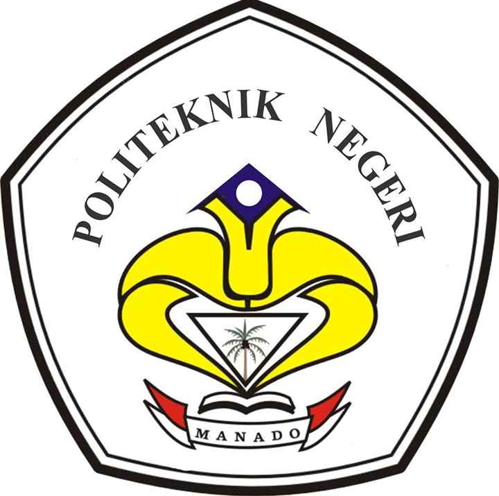

PENDIDIKAN
SD GMIM II SULUUN
Pada tahun 2006 SD GMIM II SULUUN menjadi sekolah pertama saya menimbang ilmu yang penuh dengan canda tawa. Banyak orang berkata bahwa pendidikan saya tidak sempurnah karena kata meraka saya tidak bersekolah dulu di Taman Kanak-kanak (TK), hal itu tidak berpengaruh bagi saya dan saya membuktikannya dengan selalu naik kelas dan tidak pernah tertinggal kelas. yahh walaupun tidak pernah mendapat juara sihh.
SD GMIM II SULUUN adalah tempat pertama saya mendapatkan banyak teman dan lawan (maklum lah waktu itu kan masih anak-anak). Kata ibu saya, waktu kecil saya tidak suka keluar rumah dan teman-teman saya tidak begitu banyak. Karena saya lebih suka tinggal di kebun dari pada di rumah atau di tempat-tempat ramai. Namun pada saat saya mulai bersekolah, semuanya telah berubah dan mengubah kebiasaan saya.
Banyak sekali massa indah waktu saya bersekolah disana dan itu semua tidak akan saya lupakan (yahh kecuali saya hilang ingatan)
SMP N I SULUUN
 Selanjutnya adalah SMP N 1 SULUUN (2012), Tempat dimana saya mulai meninggalkan sifat kanak-kanak dengan terbiasa belajar yang tidak lagi seperti waktu di SD. SMP N 1 SULUUN adalah tempat dimana saya bergaul dengan asap rokok dan minuman keras(miras). Pada saat itu saya sebenarnya tidak menikmati pergaulan buruk saya, namun karena saya ingin akrab dengan teman-teman saya mauh tidak mauh saya harus menikmati hal itu.
Selanjutnya adalah SMP N 1 SULUUN (2012), Tempat dimana saya mulai meninggalkan sifat kanak-kanak dengan terbiasa belajar yang tidak lagi seperti waktu di SD. SMP N 1 SULUUN adalah tempat dimana saya bergaul dengan asap rokok dan minuman keras(miras). Pada saat itu saya sebenarnya tidak menikmati pergaulan buruk saya, namun karena saya ingin akrab dengan teman-teman saya mauh tidak mauh saya harus menikmati hal itu.
di lingkungan ini saya pertam kali mengenal kata cinta (sadiisssss), tempat dimana gadis cantik menyukai pria dengan wajah yang tidak terlalu tampan (pas-pasan). Pada saat itu, meskipun saya bergaul dengan asap rokok dan sudah mengenal cinta, saya tidak lupa dengan tugas saya sebagai siswa. Dan hal itu saya buktikan dengan nilai yang selalu memuaskan, walaupun tidak pernah mendapat juara kelas. Seiring berjalannya waktu akhirnya saya bisa lulus pada tahun 2015
SMk N I SULUUN
Setelah saya lulus dari bangku SMP, saya memutuskan untuk lanjut belajar di SMK N 1 SULUUN pada tahun 2015.
SMK N 1 SULUUN adalah tempat dimana kehidupan saya berubah (ke +). Victory Djamal S.Pd adalah guru matematika terhebat menurut saya dan teman-teman saya, mungkin jika teman-teman yang membaca web ini berfikir bahwa saya terlalu berlebihan. hal itu wajar saja kerena teman-teman tidak mengenal guru kami. Sir victor mengajarkan saya banyak hal sehingga kehidupan saya dengan asap rokok berubah dengan sekejap. Hal itu juga membuat teman-teman dan orang-orang disekitar saya menjadi heran
Semua itu tidak lepas dari campur tangan Tuhan, Ia sudah menyediakannya bagi saya.
Pada waktu itu saya sering mendapatkan juara kelas dan itu semua semakin membuat saya semangat dalam study. Di sana kami diajari untuk kerja melalui Program Kerja Lapangan (PKL). Namun sayangnya karena peralatan di sekolah kami belum memadahi, jadi kami hanya menguasai pembelajaran hardwere di bandingkan softwere.
Seiring berjalannya waktu, akhirnya saya bisa Lulus pada tahun 2018.
POLITEKNIK NEGERI MANADO
Setelah saya lulus dari bangku SMK, saya memutuskan untuk lanjut belajar di POLITEKNIK NEGERI MANADO pada tahun 2018.
Di tempat ini saya mendapatkan banyak teman yang saling membantu satu dengan yang lain.
Dengan adanya proses belajar mengajar yang berbeda dengan masa SMK membuat saya lebih mandiri dan lebih bertanggung jawab dengan tugas sebagai mahasiswa.
Saya belum bisa berbagi cerita lebih banyak karena saya baru semester dua, sekarang saya harus tetap berjuang agar bisa lanjut ke semester atas dan dapat selesai dengan baik.